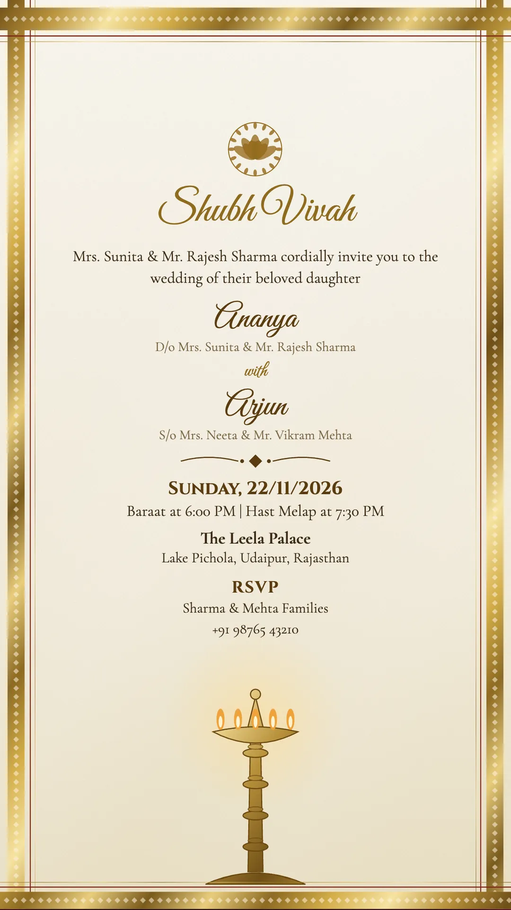
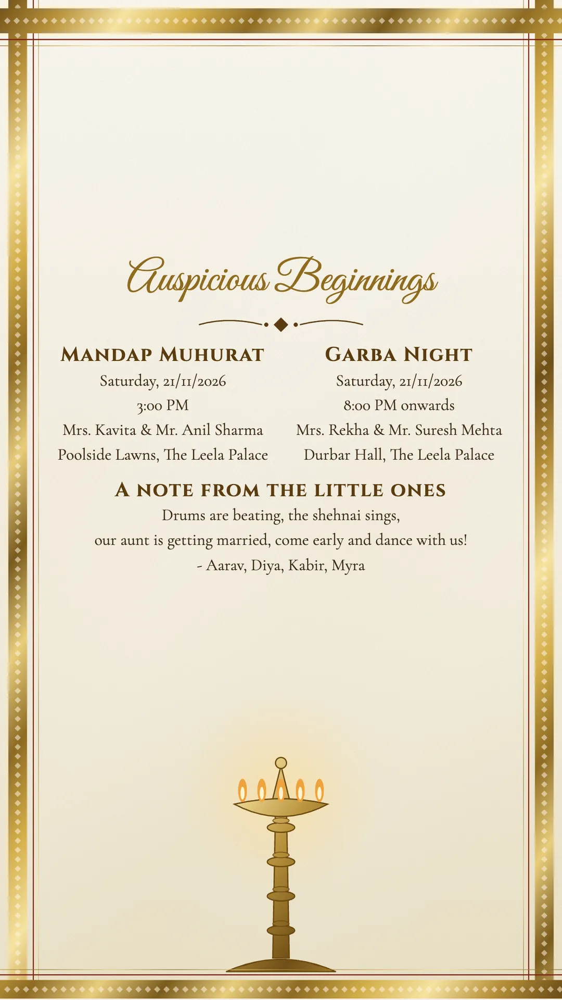
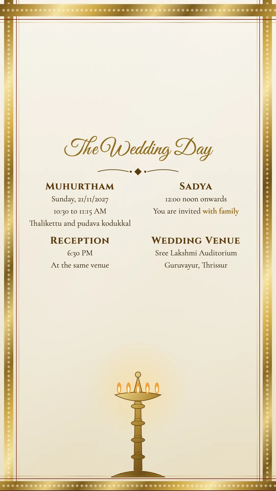
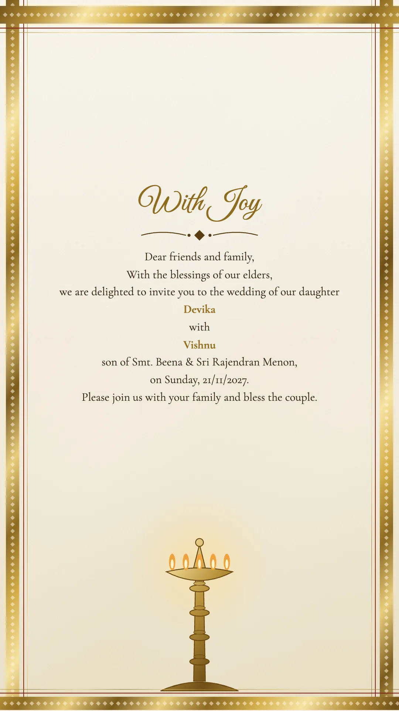
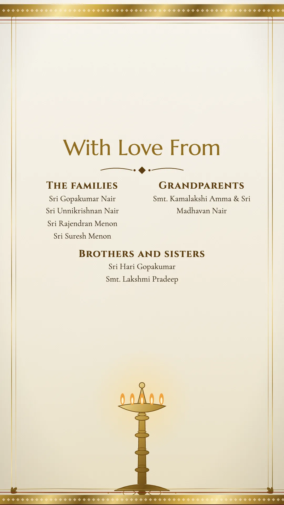
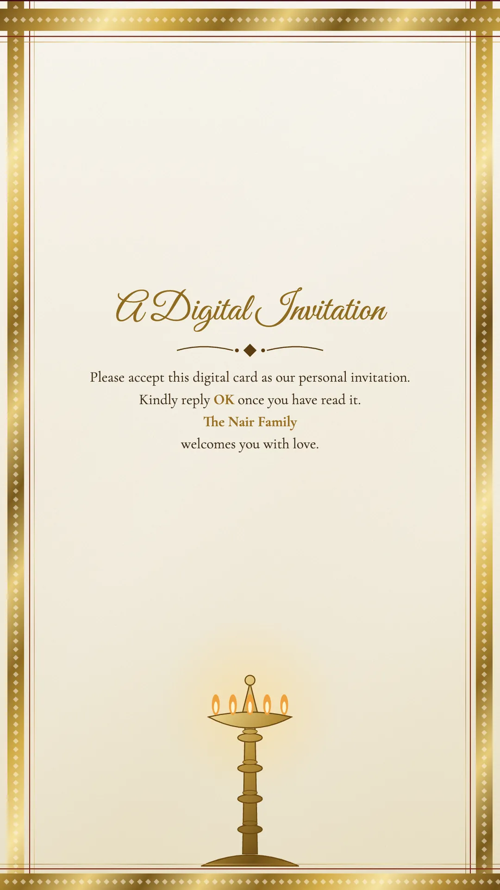

Designs › Wedding (Vivah) › Kerala Kasavu Gold Border
Kerala Kasavu Gold Border: English wedding card

- Ceremony: Wedding (Vivah)
- Language: English
- God or sacred symbol: Floral / no deity
- Format: WhatsApp image (1080 x 1920 px) and 5 x 7 inch print PDF
- Pages: 6 (cover, functions, wedding-day programme, letter, family names, closing message)
About this design
Ivory, warming to a soft gold glow at the bottom, framed by wide gold kasavu bands along all four edges, each with a row of small light diamonds woven into it, like the border of a Kerala mundu or set sari. Thin maroon and gold lines run just inside the bands. At the bottom of every page stands a brass nilavilakku, the tall standing lamp, with five lit wicks and a soft glow behind it.
A gold ring with a lotus sits at the top of the cover, then Vivaham in large gold Great Vibes script. The names are in dark brown script with D/o and S/o lines in a muted serif, and the date is in Cinzel capitals. The headings on the inner pages, such as Before the Muhurtham and With Love From, are in Cinzel small capitals, and the body text is Cormorant Garamond. There is no invocation, shlok or religious symbol on any page.
The sample wording follows a Malayali Hindu wedding. The cover gives the muhurtham as a time window in the morning, as Kerala cards usually do, and the venue is an auditorium in Guruvayur. The functions page has a dinner at the bride's home and the Ayaniyoonu, the groom's feast on the eve of the wedding. The wedding-day page lists the muhurtham with the thalikettu and pudava kodukkal, the sadya lunch and an evening reception at the same venue. A Christian family can rename these to the church service and reception, since nothing on the card is religious.
It suits Hindu, Christian and mixed Malayali families, and anyone who wants a light, gold on ivory card without a deity. Compared with White Chapel Silver Arch, which is English with a cross and a chapel, Kerala Kasavu has no religious symbol at all, so it works for both sides of a mixed wedding. Tamil families who want a temple look and a Venkateswara invocation should look at Kanchipuram Temple Silk instead.
All 6 pages
The cover is shown above. These are the other pages exactly as the card opens in the editor, with the sample family names.





Sample wording on this card
The card opens in the editor with this text. Change any line, or switch the card to another language.
Vivaham
Smt. Sreelatha & Sri Gopakumar Nair request the pleasure of your company at the wedding of their daughter
Devika
D/o Smt. Sreelatha & Sri Gopakumar Nair
with
Vishnu
S/o Smt. Beena & Sri Rajendran Menon
Sunday, 21/11/2027
Muhurtham between 10:30 and 11:15 AM
Sree Lakshmi Auditorium
East Nada, Guruvayur, Thrissur
RSVP
Nair & Menon Families
+91 98765 43210
The other five pages are Auspicious Beginnings (the functions before the wedding), The Golden Day (the wedding-day programme), Parinayotsav (the letter), Eagerly Awaiting You (the family names) and A Digital Invitation (the closing message).